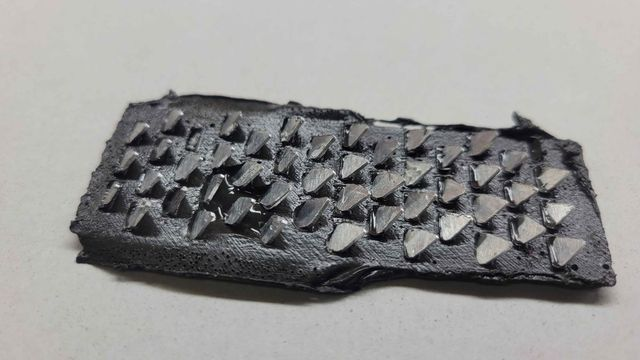
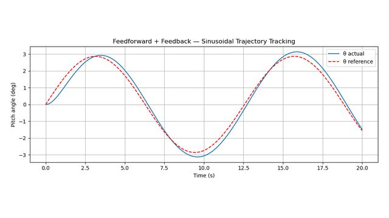
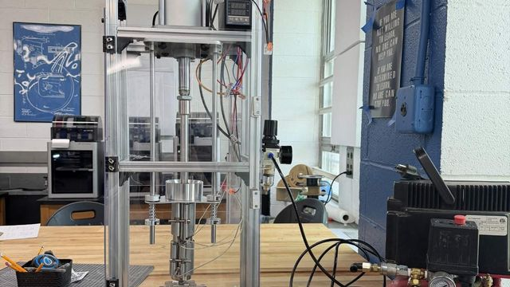
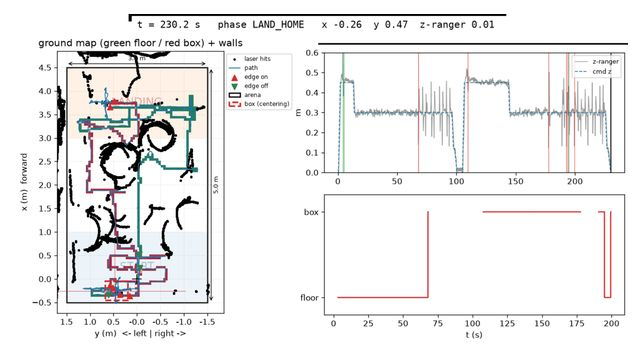

I design, build and test robotic and mechatronic systems.
I'm a mechanical engineer at Unique Technical Services, designing components and electrical systems for EV applications, while finishing my master's at Stony Brook in 2027. Before that, I spent two years on EV conversion projects: CAD, hands-on design work, and a lot of troubleshooting when something didn't fit right or a system had no documentation at all.
I like the parts of engineering that sit between design and the shop floor: taking something from a CAD model to something a technician can actually build from, and fixing the gaps in between. At school I've been teaching a tiny drone to find its own way home and building a soft robot covered in pangolin-style scales. Outside of engineering, you'll usually find me in the movie theater or playing cricket.

Skills
CAD & Design
- SolidWorks (Mechanical & Electrical)
- Fusion 360
- Sheet metal and welded assemblies
- Junction box layouts
- 2D harness drawings
Electrical
- Altium (PCB design)
- Electrical schematic markup
- EV component integration
Software & Analysis
- Python (BOM and workflow automation)
- MATLAB
- Airtable
- Microsoft Office Suite
Build & Quality
- Fabrication
- Mechatronics
- Control systems
- SOPs and assembly instructions
- ISO 9001:2015 quality practices
- Procurement and vendor sourcing
Certifications
- Engineer in Training (EIT)
- FE Mechanical
- ISO 9001:2015 Internal Audit Training
Selected projects

Pangolin-Inspired Magnetic Soft Robot
Redesigned the scale geometry of an untethered magnetic soft robot for multi-axis bending, then built and tested it in silicone, NdFeB and aluminum.

F-16 Longitudinal Flight Control
Full state-space control design for an unstable F-16 pitch model: LQR, observers, trajectory tracking, saturation and gust tests, and a Monte Carlo robustness study.

Desktop PLA Recycling Injection Molder
Senior design team build that turns PLA 3D-printing waste into molded parts. I led the production CAD and sized the mounting plates and mold clamping.

Crazyflie Autonomous Navigation
I wrote the flight code that takes a Crazyflie across an arena, around obstacles, onto a landing pad and back home again, fully autonomously.
Ford E450 & School Bus EV Conversions
Harness drawings and CAD used across 15+ electric conversion builds, plus a sheet metal redesign that cut costs by $10K.
I-Corps Customer Discovery
Interviewed 20 industry experts in three weeks to test a hydrogen technology, then rewrote our business model and target market from what we heard.
Beyond the technical work
Experience
Mechanical Engineer, Unique Technical Services
Design
- Design custom fabricated sheet metal components for EV applications, with detailed drawings and hole placement for component mounting.
- Develop junction box layouts, planning wire routing and component placement for serviceability and clean installation.
- Produce harness drawings that technicians use directly for fabrication and installation.
- Executed an engineering change integrating 3 onboard chargers into a vehicle platform: harness additions, charger placement, AC distribution box changes, and wire and terminal block counts.
- Designed a 12V distribution layout, including busbar updates and terminal placement, and coordinated its release for sourcing.
Build and test
- Performed cabin-to-chassis integration on EV builds: connected air lines, ran electrical tests, verified charging and confirmed core vehicle functions.
- Built harnesses for direct client shipment.
Software and automation
- Built a Python tool that pulls from Odoo BOMs and the part-number database to auto-generate costed BOMs, centralizing BOM creation by assembly part number, and recorded training videos so the engineering team could adopt it.
- Updated a Python application that converts SolidWorks mechanical circuit summaries into wire-machine-ready output.
Documentation, quality and procurement
- Wrote complete vehicle assembly instructions for EV truck builds (tools, torque specs, charging procedure, photos), plus instructional slideshows for wire installation and routing.
- Authored the SOP for wire machine maintenance and troubleshooting.
- Completed ISO 9001:2015 Internal Audit Training and began bringing quality management practices into company processes.
- Handle procurement for projects: work directly with vendors, place orders, find the lowest-cost options and track down hard-to-find parts, weighing price against lead time.
- Marked up electrical schematics for EE team design updates, and completed foundational Altium PCB design work ahead of board development.
Senior Intern, Unique Electric Solutions
Design
- Produced flat harness drawings and matching 3D CAD reference models that technicians used directly to build and install harnesses across 15+ EV conversion builds.
- Redesigned legacy SolidWorks drawings with the ME team, converting bent sheet metal parts to welded assemblies and writing new drawings and welding instructions, reducing EV costs by $10K.
- Created mechanical drawings for custom sheet metal components, with dimensioning and fabrication specs.
- Designed sub-assembly layouts for electrical junction boxes, coordinating fit between wiring, enclosure and mounting constraints.
- Took field measurements and selected a driveshaft for a vehicle application based on fit and vendor specifications.
Keeping design, production and purchasing in sync
- Kept SolidWorks models, electrical schematics and procurement/BOM data synchronized to prevent design-to-production mismatches.
- Wrote part descriptions and assigned part numbers to standardize component identification across the vehicle BOM.
- Wrote installation documentation defining build sequencing across subsystems, including interactive eDrawings with embedded BOMs that let technicians click a part to identify it.
- Authored SOPs for QC stations and supported ECN execution using Lean principles.
- Handled much of the procurement for conversion projects: worked with vendors, placed orders, found the lowest-cost options and tracked down hard-to-find parts, weighing price against lead time.
On the floor
- Investigated and resolved recurring electrical and mechanical issues across the conversion fleet.
- Supported vehicle commissioning, including fuse installation and helping the EE team during system testing.
- Mentored about 10 incoming interns on SolidWorks workflows and onboarding.
Programs and fellowships
Cohort Member, Energy Terminal Emerging Leaders Program
- Took part in weekly sessions with experts from leading global energy companies, building a network with industry experts and peers.
- Used MIT En-ROADS to build a low-emissions climate scenario by adjusting key policy and technology parameters.
Sr. Clean Energy Tech Transfer Fellow, LIHTI
- Researched clean energy patents with a focus on green hydrogen production, identifying key innovations and opportunities for advancement.
- Spoke with 50+ experts in the hydrogen space about industry pain points and growth prospects, building a working picture of global hydrogen benchmarks and developments.
- Completed the NY I-Corps Hub × Gotham Innovation Gambit regional I-Corps Lean Bootcamp, running 20 customer discovery interviews in three weeks (see the project).
- Developed proof-of-concept plans for two patented technologies, outlining the development process and strategies to raise their Technology Readiness Level.
- Helped build the CETX program's second cohort: recruitment strategy and outreach, the SBU job fair and an information session for prospective fellows. Selected 4 trainees to advance to full Fellows.
Education
M.S. Mechanical Engineering, Stony Brook University
Coursework: Aerial Robotics, Advanced Control Systems, Vibration and Control, Smart Materials: Sensing and Actuation, Introduction to Finite Element Methods, Applied Stress Analysis, Mechatronics, Energy Technologies Lab I & II, Total Quality Management
B.E. Mechanical Engineering, Stony Brook University
Coursework: Control System Analysis and Design, Design of Machine Elements, Internal Combustion Engines
Contact
Open to mechanical, robotics and mechatronics roles.